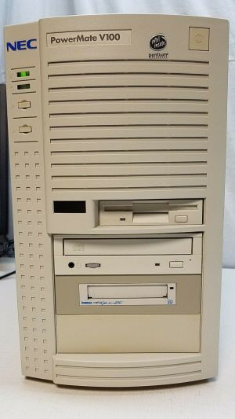

There isn't much infomation about the PowerMate series online, but from what I understand, the PowerMate was targeted towards corporate customers. I don't know when the line was discontinued either
| Photo | Machine | Year Of Introduction | CPU | RAM | Hard Drive | Modem/Networking | Cache | Sound Card | GPU | Bundled Operating System | Bundled Software | Notes |
|---|---|---|---|---|---|---|---|---|---|---|---|---|
|  | PowerMate Pentium Series | 1997 | Intel Pentium (No MMX, 75, 90, 100, 120 or 133Mhz) (Socket 5) |
8MB (75, 90 or 100 MHz Only) 16MB (120 or 133 MHz only) Maximum of 128MB |
540MB 860MB 1.08GB 1.3GB 1.6GB 1.6GB (Different Model) |
14.4/28.8 Modem, Optional | 16 KB (Primary, Via CPU), 256 (Secondary, Pipeline Burst Cache) | Unknown | ATi Rage GT | Choice of either Microsoft MS-DOS 6.22 & Windows For Workgroups Or Windows 95 |
NEC Desktop Management Interface McAfee VirusScan McAfee WebScan CyberMedia FirstAid 95 Deluxe Diagsoft. QA Plus/Pro
Taplink Netscape Navigator Misc graphics/audio utilities additional security measures |